╰┈➤ ELIGE LA CANCIÓN DE TU AGRADO
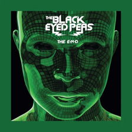
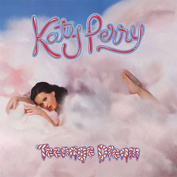
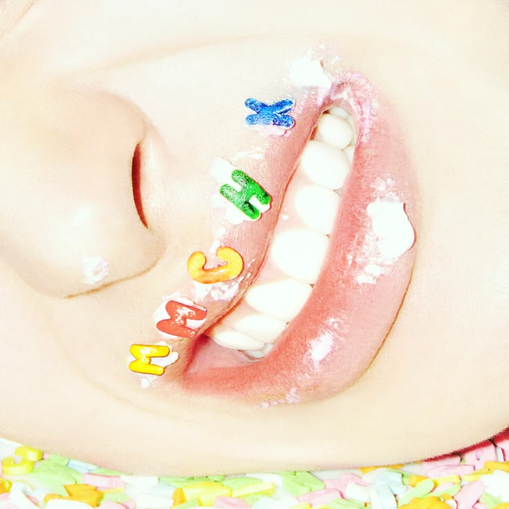
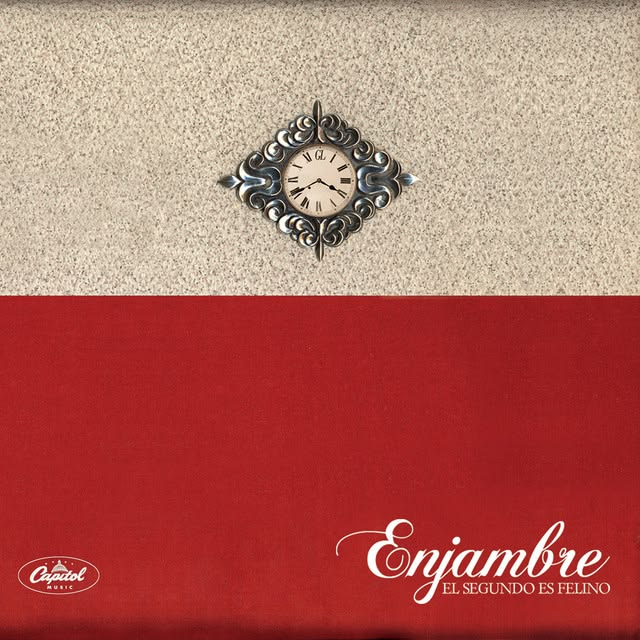

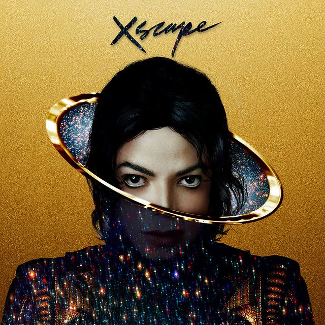
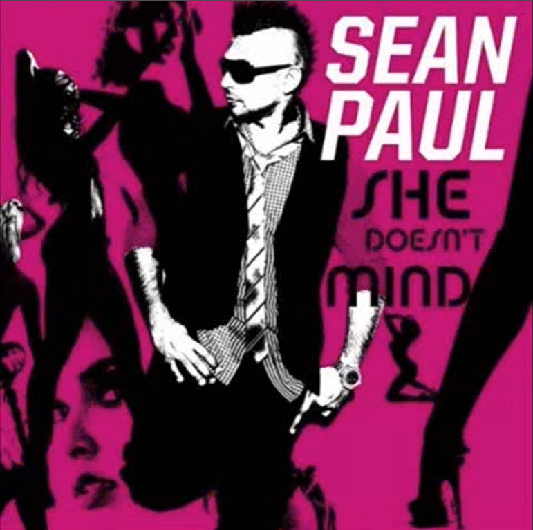

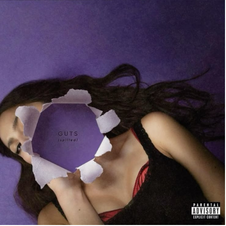
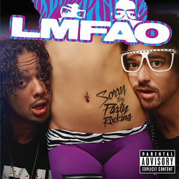
Party Rock Anthem
LMFAO (feat. Lauren Bennett & GoonRock)
Letra ♫
Traducción ↓
La canción “Party Rock Anthem” de LMFAO, junto a GoonRock y Lauren Bennett, celebra la diversión, las fiestas y la libertad de disfrutar el momento. Su estilo electro-pop, su ritmo pegajoso y el famoso baile shuffle la convirtieron en un éxito mundial. La canción invita a dejar atrás las preocupaciones, bailar y disfrutar con los demás, utilizando la música como una forma de escapar de la rutina y vivir el presente.
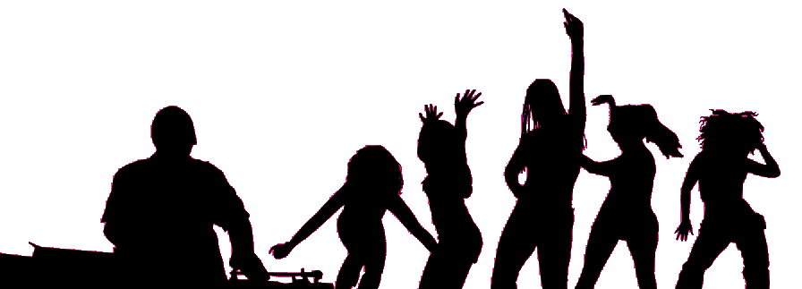
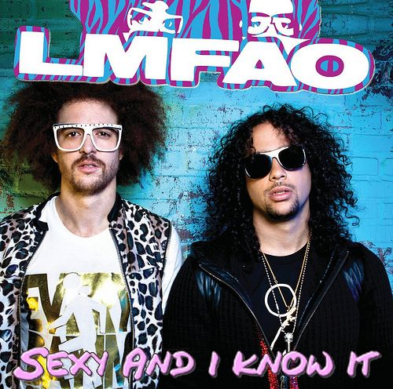
Redfoo y SkyBlu no son hermanos, son tío y sobrino. Además, son familia de Berry Gordy, fundador de Motown.
Antes de llenar estadios, subía videos cantando a YouTube. Nunca habrá otro popstar masculino como él
Antes de ser una estrella global, tocaba en clubes de París y fue construyendo su carrera desde ahí.
Antes de ser famosa, también fue recepcionista, teleoperadora y vendedora de extintores. Plot twist laboral
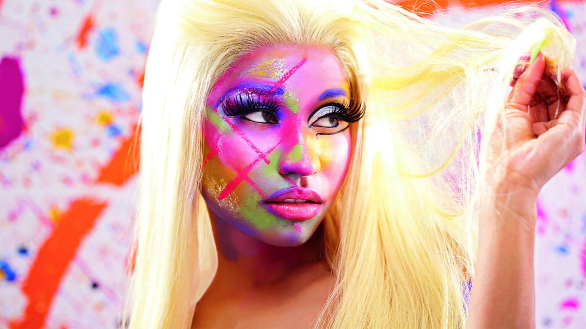